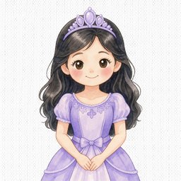

Your Bloom Journey
A friendly guide to puberty, your first period, and everything changing in your body. You are not alone. Every body grows at its own pace.
eco What is puberty?
Puberty is when your body changes from a kid's body to an adult body. It happens to everyone, usually between ages 8 and 14. It is caused by hormones, which are like chemical messengers in your body.
Everyone is different
Some people start puberty early, some later. It does not mean anything is wrong with you. Your body knows its own timeline.
favorite Changes you might notice
height
Growth spurtYou might get taller quickly. Do not worry if you feel clumsy, your body is catching up.
wb_cloudy
Breast developmentUsually the first sign. It is normal for one side to grow faster than the other at first.
water_drop
Body hairHair grows under your arms and in your pubic area. It starts soft and gets coarser.
mood
Mood swingsHormones can make you feel happy one minute and sad the next. This is normal.
dark_mode Your first period
A period (also called menstruation) is when blood and tissue come out of your vagina for a few days. It is a sign that your body is growing up and your reproductive system is working.
It is completely normal
Most people get their first period between ages 9 and 16. The average age is 12. If you have not gotten it by 15, you can ask a doctor, but it is usually fine.
schedule What to expect
- How long: Usually 3 to 7 days i. The first day is when you see blood.
- How much blood: About 2 to 3 tablespoons total i. It looks like more, but it is not.
- Color: Can be bright red, dark red, or brown. All are normal.
- Cramps: Your uterus contracts to shed its lining. It might feel like a dull ache in your lower belly.
- Cycle length: From the first day of one period to the first day of the next. Usually 21 to 35 days i. It can be irregular at first i.
backpack Be prepared
Keep a small kit in your bag or locker:
- A pad or tampon (ask a trusted adult to help you choose)
- A clean pair of underwear, just in case
- A small plastic bag for used products if there is no disposal bin
shield Period products
PadsStick to underwear. Good for beginners. Change every 4-6 hours.
TamponsInsert into vagina. Can swim with them. Change every 4-8 hours.
Period underwearWashable underwear that absorbs blood. Comfortable and eco-friendly.
Menstrual cupReusable silicone cup. Can last up to 12 hours. Takes practice.
healing Cramp relief
- Warm compress: A heating pad or warm water bottle on your belly can relax muscles.
- Gentle movement: Walking, stretching, or yoga can reduce cramps i.
- Warm drinks: Herbal tea (like chamomile or ginger) can soothe.
- Pain reliever: If cramps are bad, ask a parent or doctor about ibuprofen or paracetamol.
Hygiene reminder
Wash your hands before and after changing period products. Do not flush pads or tampons down the toilet, wrap them and put them in the bin.
mood Mood swings are real
Hormones during puberty can affect your emotions. You might feel more sensitive, irritable, or sad for no obvious reason. This is normal and will get easier as your body adjusts.
PMS (Premenstrual Syndrome)
Some people feel moody, bloated, or tired 1 to 2 weeks before their period. This is called PMS. Tracking your cycle can help you understand your patterns.
self_improvement Taking care of your mental health
- Sleep: Aim for 8 to 10 hours. Teen brains need more sleep.
- Move your body: Exercise releases endorphins, which make you feel good.
- Talk to someone: A friend, parent, teacher, or school counselor. You do not have to handle everything alone.
- Limit screen time: Social media can affect how you feel about yourself. Take breaks.
- Be kind to yourself: Your body is doing amazing things. Do not compare yourself to others.
If you feel really down
If you feel sad most days, or have thoughts of hurting yourself, please tell a trusted adult right away. You can also call a helpline. In Singapore: 1800-221-4444 (SOS). You matter.
restaurant Fuel your growing body
During puberty, your body needs extra energy and nutrients. Eat regular meals and snacks. Do not skip breakfast, it helps you focus at school.
nutrition Key nutrients for teens
IronImportant for blood. Eat: lean meat, beans, spinach, fortified cereal.
CalciumBuilds strong bones. Eat: milk, yogurt, cheese, tofu, leafy greens.
ProteinHelps you grow. Eat: eggs, fish, chicken, beans, nuts.
WaterStay hydrated. Aim for 6 to 8 glasses a day.
local_cafe Period-friendly foods
- Before your period: Foods rich in magnesium (nuts, seeds, dark chocolate) may help with PMS.
- During your period: Warm foods, ginger tea, and iron-rich foods can help you feel better.
- Limit: Too much sugar, caffeine, and salty foods can make bloating and mood swings worse.
medical_services When to see a doctor
It is a good idea to have a doctor you feel comfortable talking to. Here are some reasons to make an appointment:
- You have not gotten your period by age 15
- Your period is very heavy (soaking through a pad every hour for several hours)
- Cramps are so bad they stop you from going to school or doing things you enjoy
- Your period lasts more than 7 days
- You feel very sad or anxious most of the time
- You have questions about your body or health that you do not feel comfortable asking anyone else
record_voice_over Talking to a doctor
Doctors are there to help. It is their job to answer your questions. You can ask to have a parent or trusted adult in the room with you, or you can ask to talk alone. Everything you say is confidential (private), unless they think you are in danger.
Write down your questions
Before your appointment, write down what you want to ask. It is easy to forget when you are nervous. You can even show the list to the doctor.
Emergency warning signs
If you have very heavy bleeding with dizziness, fainting, or severe pain, tell an adult immediately or go to the emergency room.
This guide is for educational purposes only and is not medical advice. Always consult a healthcare professional for personal medical concerns.